D2R-DK 食用指南
国服 / 国际服多开器 · 已支持批量多开
文档 v1.5.0 · 对应 D2R-DK v0.1.4
这是什么
D2R-DK 是《暗黑破坏神 II：重制版》的多开器：在一台 Windows 电脑上同时启动多个游戏账号，每个账号记住自己的画质、声音、Mod、窗口标题和窗口位置，互不干扰。
登录不走战网客户端，而是用你从战网网页登录后拿到的 Token 直接启动游戏。可以只开一个号，也可以勾选多个号一键批量开。国服和国际服都支持，在设置里切换。
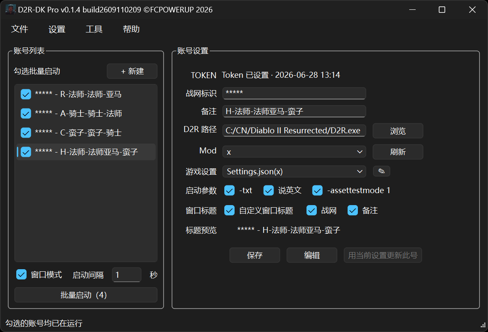
一、主密码（程序锁）无法找回，忘了就打不开已保存的账号。
二、这是第三方辅助软件，使用风险自负。
三、程序目录里的 .json、.lock.json、.ini、*.bak 都不要删，删了会丢账号。
使用方法
首次运行
- 把下载下来的 exe 放到一个固定目录，路径尽量短，之后不要再挪动。
- 以管理员身份运行这个 exe（文件名带版本号和 build 号，例如
D2R-DK_v0.1.4_build2609110209_p.exe）。 - 第一次会让你设主密码（程序锁），设了就无法找回，请自己记牢。
- 以后每次启动都要输这个密码解锁。
- 同一台电脑不要同时开两个 D2R-DK。
Token 是什么
你用战网账号在浏览器里登录成功后，跳转页面的地址栏里会出现一段以 ST=CN- 开头的字符串，这就是 Token，是一张一次性的登录票据。D2R-DK 保存这段票据交给游戏，它不是你的战网密码。
Token 会过期，过期后要重新登录网页再复制一遍。账号列表里的「战网标识」只是给你自己看的备注，不能当 Token 用。
点「获取」只是帮你打开浏览器，程序不会自动把 Token 抓回来。必须你自己复制地址栏那段 ST=，粘贴回 D2R-DK 再保存。主界面上的 TOKEN 那一行是只读的，要改 Token 得点「编辑」。
网易账号 + 大神验证码 不等于 战网账号 + 战网密码。国服很多人只有网易账号，需要在战网登录页点底部的「无法登录？」，用网易身份找回自己的战网账号和密码，之后才能拿 Token。
战网登录页地址：
https://account.battlenet.com.cn/login/zh/?externalChallenge=login&app=OSI
添加账号 7 步
第 1 步 设主密码，点「+ 新建」
首次运行设好主密码解锁后，点左侧的「+ 新建」打开添加账号弹窗。也可以走「文件 → 新建配置」。

第 2 步 点「获取」去登录战网
在 TOKEN 那一行点「获取」，程序会自动打开浏览器进入战网登录页。如果浏览器没弹出来，点旁边的「复制战网链接」，自己粘贴到 Chrome / Edge / Firefox 打开。

如果登录第二个账号时浏览器显示「无法访问此页面」，通常是浏览器读取了上一次的登录信息。两个办法：① 自己开一个无痕 / 隐私窗口，把「复制战网链接」粘贴进地址栏登录；② 换一个和第一次登录不同的浏览器。
第 3 步 用战网账号登录，不是网易账号
- 在登录页底部点「无法登录？」，通过网易验证找回你的战网账号和密码。
- 再用战网邮箱或手机号 + 战网密码登录。
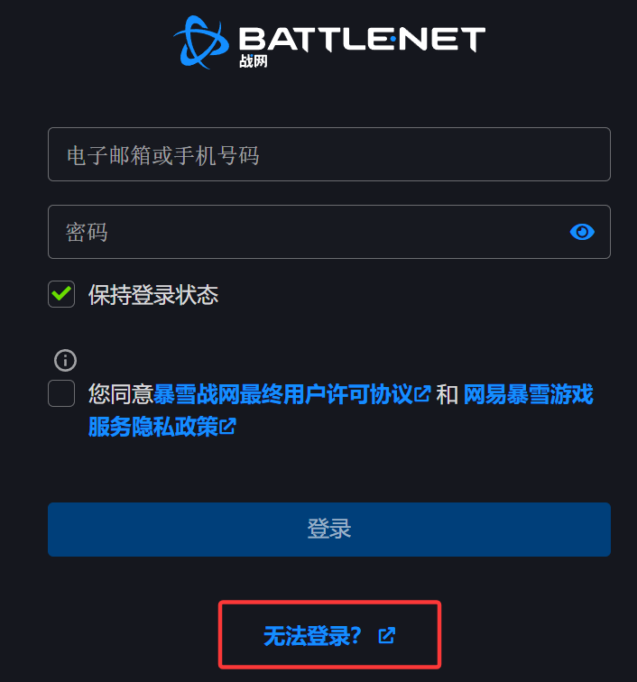
第 4 步 复制地址栏的 ST
登录成功页面跳转后，看浏览器顶部地址栏，把完整的 ST=CN-… 复制下来，回到 D2R-DK 粘贴进 TOKEN 输入框。

第 5 步 填完弹窗，保存
粘贴 ST；填「备注」（会用作游戏窗口标题，方便多开时分辨）；点「浏览」选中你的 D2R.exe；需要 Mod 就在下拉里选；按需勾选启动参数。填完点保存。
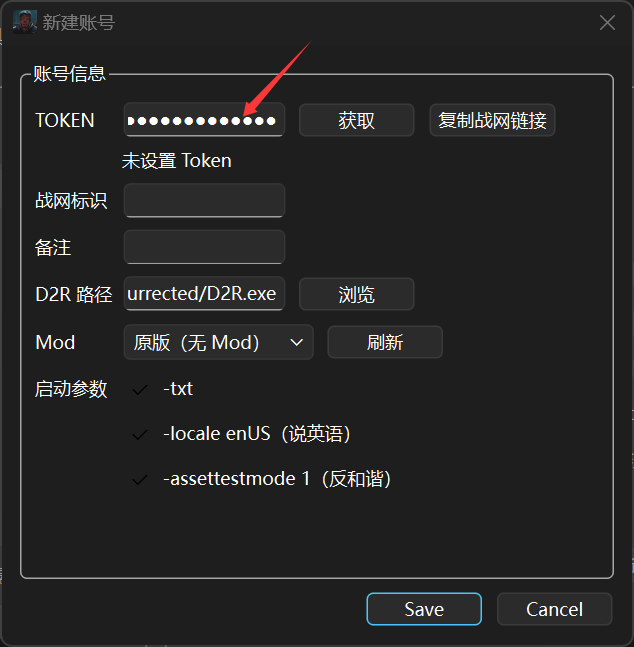
弹窗里的启动参数带中文说明（例如「说英语」「反和谐」），主界面右侧的同名勾选项没有中文说明，作用完全一样。
国服的语言跟着 -locale enUS 这个勾走：勾上是英文界面 + 英文语音；不勾是简体界面 + 普通话配音。
国际服的语言由本机注册表设置决定，界面可选英文 / 简体中文 / 繁体中文三种，「说英文」这一项单独控制语音。国际服没有简体中文配音包，选中文语音实际是繁体中文配音，英文语音用的是内置英文包。某种语言第一次使用时，语音包由战网客户端下载，之后本工具可以直接切换。
第 6 步 给这个号选游戏设置
回到主界面选中刚建好的账号，在「游戏设置」下拉里选 Settings.json，然后保存。如果这个号要玩多个 Mod，先去设置里勾上「Mod 独立 Settings」，再分别给每个 Mod 存一份设置，详见下面的每号游戏设置。

第 7 步 启动
选中账号后点「▶ 启动」就能开这个号。想一次开多个，勾选 2 个以上账号再点「批量启动」。启动的各种细节见下一节。
启动游戏
账号列表里有两种「选中」，别混：点账号行的文字是高亮（右侧会显示它的设置）；点前面的复选框是勾选（用于批量）。高亮和勾选互不影响。
| 想做什么 | 怎么做 |
|---|---|
| 只开一个号 | 点文字高亮该号 → 按需勾「窗口模式」→ 点「▶ 启动」 |
| 不改高亮，单独开某个号 | 右键该号 → 单独启动。不看勾选状态，批量中某号闪退也用这个重拉 |
| 一次开多个号 | 勾选 2 个以上 → 点「批量启动（N）」，N 是勾选的个数 |
| 批量开一半想停 | 批量进行中主按钮会变成「停止」，点它 |
| 关掉开好的游戏 | 右键任意账号 → 关闭所有游戏 |
勾选 0 个或 1 个时，主按钮显示「▶ 启动」，启动的是当前高亮那一行；勾选 2 个以上才变成「批量启动（N）」。「启动间隔」只在批量时生效。
账号名后面可能带小字后缀，含义是：· 待设置 = 这个号还缺 Token 或游戏路径；· 缺 settings = 还没给它归档过游戏设置，需要先单独开一次再归档。批量时这两种号会被跳过。
批量启动的细节
- 原版，以及带开场动画的 Mod：程序会代你按空格跳过动画，再代你点过闪屏。
- 本身就跳过动画的 Mod：直接代过闪屏。
- 批量时如果你还没勾「代过闪屏」，程序会自动帮你打开（状态栏会提示一次），否则卡在闪屏上没法按间隔继续开下一个。单独开一个号时不会动这个开关。
- 「启动间隔」控制的是：过完闪屏之后，等几秒再开下一个号。
- 点「停止」后，正在开的那个号会开完，剩下的不再开；已经开好的游戏窗口不会被关，剩余账号的勾选也保留。状态栏会告诉你开了几个、还剩几个。
已经被本程序开着的账号，再勾选启动时会自动跳过，右键的「单独启动」对它也是灰的，避免把已登录的角色挤下线。但你自己在文件管理器里双击打开的游戏窗口，程序认不出是哪个号的，不会拦。
只关当前区服里由本工具打开的游戏窗口。你自己双击开的、以及另一个区服的窗口都不关。当前区服没有本工具开的窗口时，这一项是灰的。
每号游戏设置
游戏本身只有一份画质声音配置文件，多开时几个号会互相覆盖。D2R-DK 的做法是给每个号单独存一份，启动前自动写进去，所以各号的画质互不干扰。游戏的原始配置文件在这里：
C:\Users\<你的用户名>\Saved Games\Diablo II Resurrected (CN)\Settings.json
给一个号归档设置的步骤：
- 选中这个号，启动进游戏，把画面、声音调成你想要的样子。
- 完全退出这个 D2R。
- 回到 D2R-DK，点「用当前设置更新此号」。
成功之后账号名后面的「· 缺 settings」就没了。以后想改这个号的画质，同样是改完 → 关掉所有 D2R → 再点「用当前设置更新此号」。有任何 D2R 在运行时这个按钮是灰的，防止采集到错误的配置。
Mod 独立 Settings
同一个号玩不同 Mod 时，合适的画质、地图设置可能完全不同。在「设置」菜单里勾上「Mod 独立 Settings」后，游戏设置就按「账号 + Mod」分别保存。「游戏设置」这一行的名字会带上括号告诉你当前是哪一份：不用 Mod 时显示 Settings.json(原版)，用 Mod 时括号里就是这个 Mod 的名字。下面这张截图里，被选中的 Mod 恰好叫 x，所以显示成 Settings.json(x)；如果你的 Mod 叫 PD2，看到的就是 Settings.json(PD2)。
切换 Mod 下拉时，「游戏设置」这一行会同步跟着换到该 Mod 对应的那份。还没归档过的 Mod 会显示为未配置，照样可以点「用当前设置更新此号」现场新建一份。
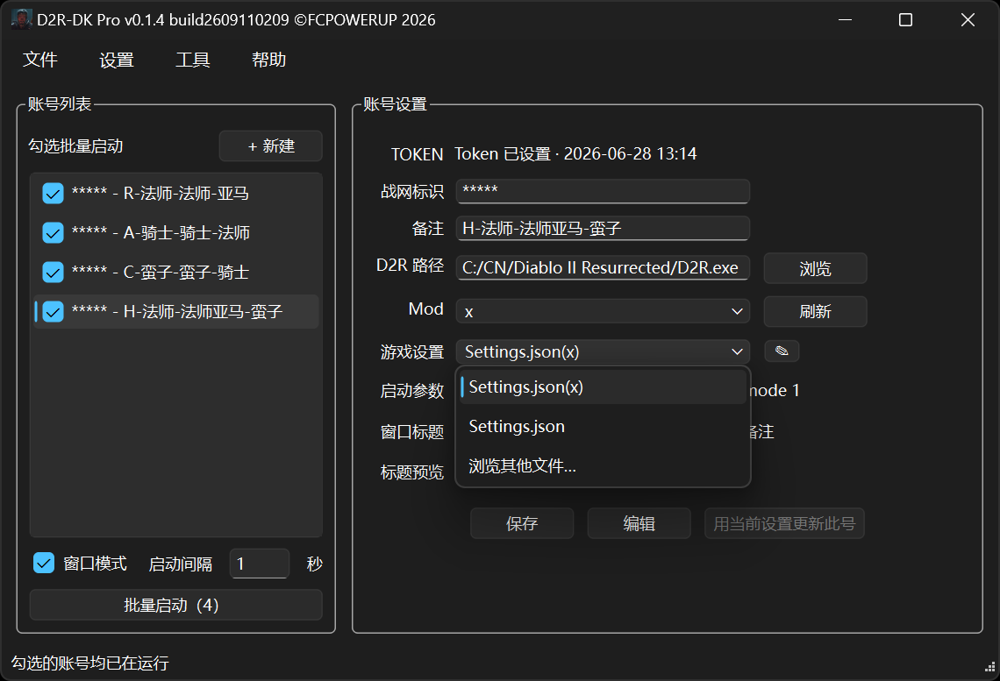
把这个开关关掉后，会恢复成每个号共用一份设置；已经存好的 Mod 独立配置不会被删除，再打开还能继续用。
Mod
Mod 要按游戏的规矩放在游戏目录下，文件夹名和 .mpq 文件名必须一致，而且区分大小写：
<D2R 游戏目录>\mods\Mod名\Mod名.mpq
游戏路径设置正确后，点 Mod 下拉旁边的「刷新」，程序会自动扫出可用的 Mod 供你选。下拉里选「原版」就是不加载任何 Mod。用 Mod 时通常需要勾上 -txt。
启动参数
| 参数 | 作用 |
|---|---|
-txt | 玩 Mod 时用，多数 Mod 建议勾上 |
-locale enUS | 界面与语音改英文，弹窗里显示为「说英语」 |
-assettestmode 1 | 反和谐，弹窗里显示为「反和谐」 |
-w | 窗口模式，在左下启动栏勾「窗口模式」即为全局启用 |
备份与换机
换电脑走「文件 → 导出配置」，在新电脑上走「文件 → 导入配置」。也可以直接复制整个程序文件夹做备份，但同一个目录不要同时运行两个 D2R-DK。
导出时有两种模式：
- 仅导出设置：不带登录状态，文件小。到了新电脑，国服号要重新粘贴 Token，国际服号要重新填战网密码。
- 完整迁移：加密包里带上国服账号的 Token，导入后国服号可以直接启动。国际服账号的战网密码不会写入导出包，到新电脑仍要重新填。必须另设一个导出包密码：至少 12 位，要含字母和数字，不能和主密码相同，建议再加符号。
账号的基础信息一定会导出；启动设置、窗口布局、每个账号的游戏设置、TZ / DC 监控窗偏好、墨水屏推送设置这几项可以自己勾要不要带。
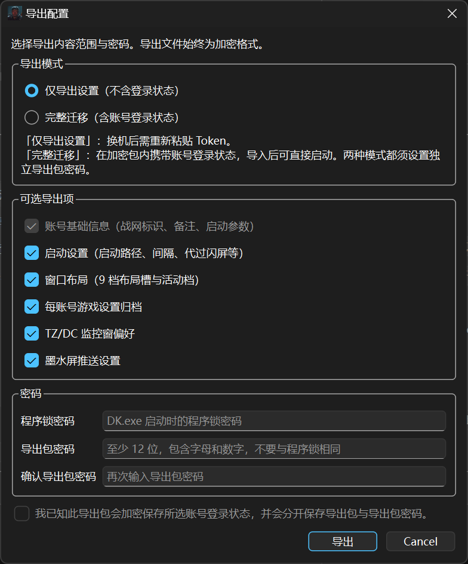
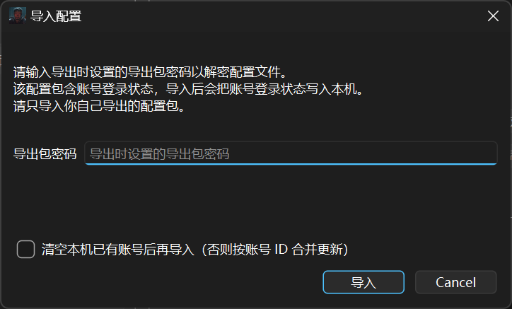
完整迁移的导出包等于把所选国服账号的 Token 加密备份了一份。请把导出包和它的密码分开存放，不要把包发给网友，也不要上传到未加密的网盘。一旦文件或密码泄露，请按战网账号安全流程处理，并重新获取 Token。
国际服账号的战网密码不会写入导出包，两种导出模式都是这样，到新电脑要重新填写。激活状态跟电脑绑定，也不随导出包走；新电脑上如果还要用墨水屏推送，请联系作者申请新激活码，多开本身不受影响。
旧版本的导出包仍然可以导入。由于 Token 与电脑绑定，跨机后可能失效，导入完成后程序会提示哪些账号需要重新粘贴 Token，这是正常现象。
软件界面布局
这一章只讲界面上各处是什么、在哪里，具体怎么操作见上面的使用方法。主窗口从左到右分三块：左上是账号列表，左下是启动栏，右边是当前高亮账号的设置。顶部是文件、设置、工具、帮助四个菜单。
左侧 · 账号列表
- 每一行的组成：复选框 + 战网标识 + 备注 + 状态后缀。
- 点复选框是勾选（用于批量），不会切换高亮；点行上的文字是高亮，右侧随之显示该号设置。
- 状态后缀：· 待设置 = 缺 Token 或游戏路径；· 缺 settings = 还没归档游戏设置。
- 顶上的「+ 新建」开添加账号弹窗；双击某个账号是打开编辑。
- 调顺序：长按账号行大约 1 秒后拖动，松手即保存；也可以用右键菜单里的「上移 / 下移」。
在账号列表上右键，菜单从上到下是：单独启动、编辑账号、全选、反选、上移、下移、删除，最下面隔一条分隔线之后是「关闭所有游戏」。分隔线是故意加的，避免误点到关游戏。
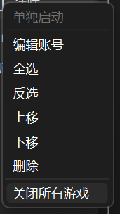
左下 · 启动栏
| 控件 | 说明 |
|---|---|
| 窗口模式 | 全局加 -w 参数，让所有号都以窗口方式启动 |
| 启动间隔 | 批量时每个号之间等几秒，只在勾选 2 个以上时生效 |
| 启动 / 批量启动（N） | 勾 0 或 1 个时启动高亮那行；勾 2 个以上变批量，进行中变成「停止」 |
| 用当前设置更新此号 | 把当前游戏的 Settings.json 归档给高亮账号，有 D2R 在运行时是灰的 |
右侧 · 账号设置
显示当前高亮账号的全部设置：TOKEN（只读，要改点「编辑」）、战网标识与备注、D2R 路径与「浏览」按钮、Mod 下拉与「刷新」按钮、启动参数勾选、游戏设置下拉，以及窗口标题的组合方式和标题预览。底部三个按钮是保存、编辑、用当前设置更新此号。
窗口标题可以自己组合：勾「自定义窗口标题」后，再勾要不要带战网标识、要不要带备注，下面的「标题预览」会实时显示游戏窗口最终叫什么名字。
顶部菜单
文件：新建配置、导入配置、导出配置、退出。
设置：区服切换、界面外观、启动行为、隐私都在这里，逐项说明见设置菜单。
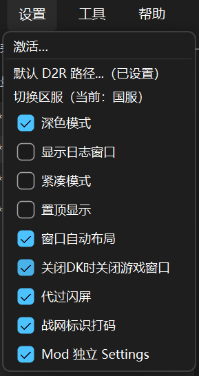
工具：窗口布局、TZ / DC 监控、速查手册，三项都在功能一章里展开。
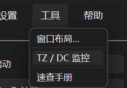
帮助：关于，可以看到版本号和 build 号。
紧凑模式与系统托盘
在「设置 → 紧凑模式」勾上后，右侧的账号设置栏会收起来，只留账号列表和启动栏，窗口变窄，适合挂在屏幕角落。这个偏好记在 D2R-DK.ini 里，下次启动自动还原。
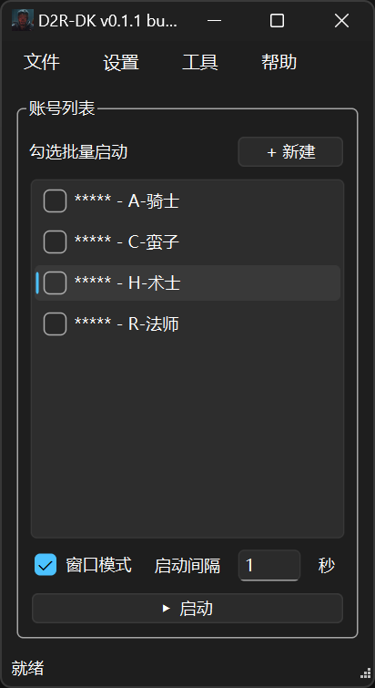
点标题栏的最小化会收进系统托盘，不占任务栏。单击托盘图标恢复窗口，点 × 才是真正退出。
如果勾了「关闭DK时关闭游戏窗口」，点 × 退出时会同时关掉当前区服里由本工具打开的游戏窗口；从托盘右键选退出则不关游戏。
系统托盘按正在运行的那个 exe 的完整路径认程序。换新版本后文件名会变，托盘图标可能要再设一次显示。窗口标题栏和关于页里显示的是具体版本号。
功能
功能一览
| 功能 | 做什么 | 在哪里 |
|---|---|---|
| Token 多开 | 用网页登录拿到的票据直接开游戏，不开战网客户端 | 账号设置的 TOKEN 行 |
| 批量启动 | 勾多个号一键依次开，可调间隔，中途可停 | 左下启动栏 |
| 国际服多开 | 国服与国际服各自一套账号列表和窗口布局 | 设置 → 切换区服 |
| 解压即用 | 设一次 D2R.exe 路径即可，游戏更新照常自己更新 | 设置 → 默认 D2R 路径 |
| 每号独立 | Token、游戏设置、Mod、窗口标题各号分开，多开不串 | 右侧账号设置 |
| Mod 独立 Settings | 同一个号的不同 Mod 各存一份画质设置，切 Mod 自动切 | 设置 → Mod 独立 Settings |
| 自定义窗口标题 | 标题可自由组合，多窗口一眼分清谁是谁 | 右侧账号设置 |
| Mod 下拉选择 | 自动扫出游戏目录里的 Mod，每号独立选 | 右侧 Mod 下拉 + 刷新 |
| 账号排序 | 长按拖动，或右键上移 / 下移 | 账号列表 |
| 关闭所有游戏 | 一次关掉当前区服里本工具开的所有游戏窗口 | 账号列表右键最末项 |
| 窗口布局 | 9 套布局槽，记住窗口位置，启动后自动摆好 | 工具 → 窗口布局 |
| 紧凑模式与托盘 | 收起右栏，可缩到系统托盘不占任务栏 | 设置 → 紧凑模式 |
| 配置加密 | 账号与 Token 用 AES-256 加密，导出另设密码 | 自动生效 |
| TZ / DC 监控 | 独立小窗看恐怖地带和黑毛进度，可置顶 | 工具 → TZ / DC 监控 |
| 速查手册 | 用系统浏览器打开暗黑破坏神 2 速查页 | 工具 → 速查手册 |
设置菜单
菜单截图见顶部菜单。各项含义：
| 选项 | 说明 |
|---|---|
| 激活… | 输入激活码。当前需要激活的只有一项：把 TZ / DC 消息推送到墨水屏。不激活不影响多开，账号管理、批量启动、每号游戏设置、Mod、窗口布局、TZ / DC 监控窗都照常用 |
| 默认 D2R 路径… | 设一次游戏 D2R.exe 路径，之后新建账号自动填好 |
| 切换区服 | 国服与国际服切换，账号列表和窗口布局按区服各自独立 |
| 深色模式 | 界面深色 / 浅色主题 |
| 显示日志窗口 | 在主窗口下方展开运行日志 |
| 紧凑模式 | 收起右侧账号设置栏，只留账号列表与启动栏 |
| 置顶显示 | D2R-DK 主窗口始终显示在最前面 |
| 窗口自动布局 | 启动游戏后自动按已保存的布局摆放窗口 |
| 关闭DK时关闭游戏窗口 | 勾上后点主窗 × 会同时关掉当前区服里本工具开的游戏窗口；托盘退出不关 |
| 代过闪屏 | 自动点过游戏启动时的闪屏。批量启动时程序会自动帮你打开 |
| 战网标识打码 | 日志里把战网标识替换成 *****，方便截图发给别人 |
| Mod 独立 Settings | 每个号的每个 Mod 各用一份游戏设置，互不覆盖 |
窗口布局
记住每个游戏窗口的位置和大小，多开时不用每次手动拖。走「工具 → 窗口布局」打开布局管理器，一共 9 个槽位，编号 #0 到 #8。
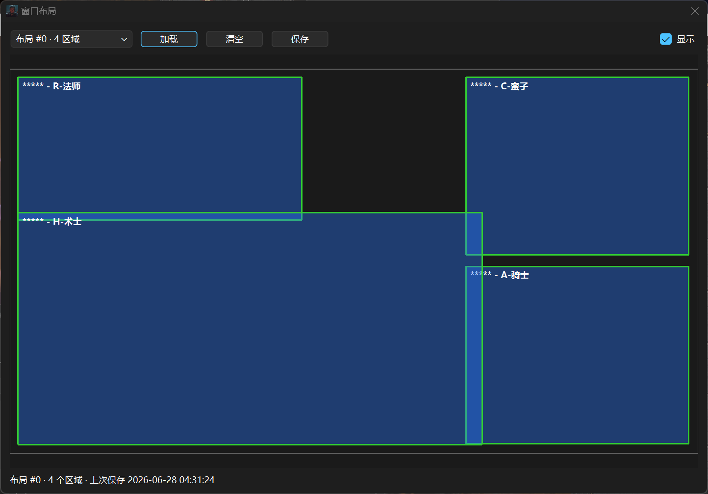
保存一套布局：
- 先把要用的几个 D2R 窗口都开出来，手动摆到满意的位置（也可以配合 FancyZones 这类分屏工具）。
- 打开「工具 → 窗口布局」。
- 选一个槽位，点「保存」，当前区服正在运行的游戏窗口位置就写进这个槽了。
- 勾上「显示」可以看这个槽上次保存时的预览图（是快照，不是实时画面）。
让它启动时自动摆好：
- 在「设置」里勾上「窗口自动布局」。
- 在布局管理器里把要用的那个槽选为当前槽，并确认它已经保存过。
- 之后启动游戏，程序会等游戏窗口稳定下来再把它移到预设位置。
| 按钮 | 作用 |
|---|---|
| 加载 | 立刻把这个槽的布局应用到当前区服的游戏窗口 |
| 保存 | 把当前窗口位置写进选中的槽 |
| 清空 | 清掉这个槽里已存的内容 |
| 显示 | 展开 / 收起预览区 |
布局槽按区服分开：国服和国际服各有一组 9 个槽，互不影响。窗口标题会写明当前区服，例如「窗口布局（国服）」；保存和加载都只作用于当前区服的游戏窗口。在设置里切换区服时，布局窗口会自动关闭，再打开就是新区服的那一组槽。
自动布局只移动 D2R 游戏窗口，不动 D2R-DK 自己；D2R-DK 主窗口的位置记在 D2R-DK.ini 里。
TZ / DC 监控
走「工具 → TZ / DC 监控」打开一个独立小窗，可以置顶，边玩边看，不影响多开。
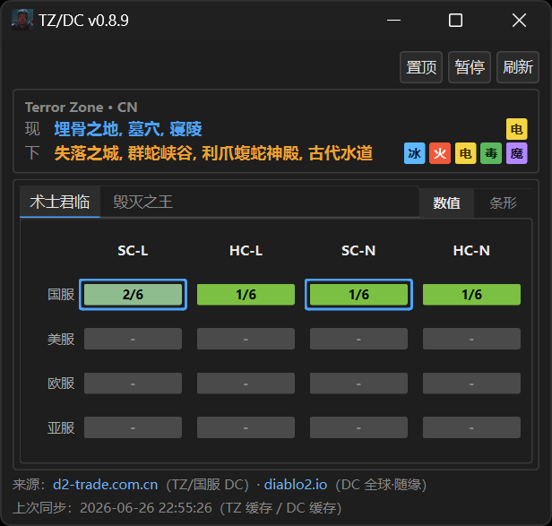
| 按钮 | 作用 |
|---|---|
| 设置 | 墨水屏推送等可选项 |
| 置顶 | 小窗始终显示在最前面 |
| 暂停 / 继续 | 暂停或恢复每 60 秒的自动刷新 |
| 刷新 | 立刻重新拉取一次数据 |
TZ（恐怖地带）：蓝色的「现」是当前这半小时的区域，橙色的「下」是下半小时的区域，每 30 分钟更新一次。区域多的时候会自动换行，鼠标悬停可以看完整列表。
DC（黑毛，即术士君临 / 毁灭之王）：分国服、美服、欧服、亚服四个区，每个区又分四种模式。显示方式可以选「阶段数值」或「6 段彩色条形」。底部可以选择把数据推送到墨水屏，这一项需要激活；监控窗本身不需要激活就能看。四种模式的缩写：
| 缩写 | 含义 |
|---|---|
| SC | Softcore，普通模式 |
| HC | Hardcore，专家模式 |
| L | Ladder，天梯 |
| N | Non-Ladder，非天梯 |
速查手册
走「工具 → 速查手册」，用系统默认浏览器打开暗黑破坏神 2 的速查页，查符文之语、掉落、抗性之类的资料。
程序介绍
这一章是背景资料：跑起来需要什么、程序在你硬盘上放了什么、多开是怎么实现的、加密做到什么程度。日常使用不需要看，出问题或者不放心的时候再翻。
运行环境
| 项目 | 要求 |
|---|---|
| 系统 | Windows 10 / 11，64 位 |
| 游戏 | D2R 已安装，且本机能正常启动 |
| 权限 | 建议右键以管理员身份运行 |
| VC++ 运行库 | 提示缺 VCRUNTIME140.dll 时，装 VC++ 2015-2022 x64 |
| 浏览器 | 获取 Token 需要 Edge、Chrome、Firefox 之一 |
运行目录与配置文件
把下载下来的 exe 放到一个固定目录即可，不需要安装。日常双击这一份带版本号的文件。下面这些文件是第一次运行后自动生成的：
D2R-DK_v…_build…_p.exe ← 日常启动（文件名带版本号和 build 号） 首次运行后自动生成： D2R-DK.json ← 账号、Token、布局、开关（加密） D2R-DK.lock.json ← 主密码校验 D2R-DK.ini ← 界面偏好（明文，不含 Token） D2R-DK.json.bak ← 自动备份 D2R-DK.ini.bak ← 自动备份 snapshots\ ← 每个号的游戏设置归档 logs\ ← 运行日志
| 文件 | 存什么 | 能手改吗 |
|---|---|---|
D2R-DK.json | 账号、Token、窗口布局、各项开关 | 不能，AES-256 加密 |
D2R-DK.lock.json | 主密码校验信息 | 不能 |
D2R-DK.ini | 窗口位置、主题、紧凑模式等偏好 | 可以，明文且不含 Token |
*.bak | 上面两个文件的自动备份 | 不要删 |
snapshots/ | 每个号归档的游戏设置 | 请用界面里的按钮更新 |
不要手动删 .json、.lock.json、.ini、*.bak。删掉 lock 会打不开程序，删掉 json 会丢账号和 Token。要腾硬盘空间的话，只删旧版本的 exe 或者 logs\ 里的日志。
多开原理
D2R 靠一个系统层面的命名对象来阻止自己被重复打开。D2R-DK 在启动新实例之前先释放掉这个占用，再把当前账号的 Token 写进去，然后启动游戏进程，因此可以同时跑多个客户端。
使用第三方工具多开存在账号风险。不要在公用电脑上保存 Token。主密码和导出包密码请自己保管好。
安全与加密
主密码无法找回，忘了就无法解密本机已保存的配置。换电脑请用导出备份，不要指望找回密码。
- 主密码（程序锁）：首次运行时设定，之后每次启动都要输。校验信息存在
D2R-DK.lock.json。 - 账号数据加密：
D2R-DK.json里的账号、Token、布局等全部用 AES-256 加密，解锁之后才能读写。其中的 Token 还额外用 Windows 自带的数据保护机制再包了一层，换电脑或换用户通常解不开。 - 导出包：单独设导出包密码，和主密码不是一个，且不允许相同。程序不接受明文含 Token 的 JSON 文件。完整迁移模式的包带国服 Token，不带国际服战网密码；仅导出设置的包两种登录信息都不带。
- 界面偏好：
D2R-DK.ini是明文，但里面只有窗口位置、主题这类偏好，不含 Token。 - 光有 exe 解不开别人的数据：密钥是从你的主密码算出来的，不在 exe 里。真正需要防的是整个程序目录被人整体拷走，加上主密码设得太弱被离线穷举。
日志与关于
「设置 → 显示日志窗口」可以在主界面下方展开运行日志，日志文件在程序目录的 logs\ 里。反馈问题时带上日志会好查很多；如果担心截图泄露账号，先勾上「战网标识打码」，日志里的战网标识会变成 *****。
「帮助 → 关于」可以看到当前版本号和 build 号。
常见问题
| 现象 | 怎么办 |
|---|---|
| 没有 Token / 不知道去哪拿 | 照添加账号 7 步走一遍，从网页登录后地址栏复制 |
| 提示 Token 无效 | 过期了或者没复制全。重新登录网页，跳转后复制完整的 ST |
| 浏览器打不开战网链接 | 点「复制战网链接」，自己粘贴到 Chrome 或 Edge 打开 |
| 浏览器一闪就关 | 把浏览器升到最新版；仍然异常就复制链接手动登录 |
| 登录第二个号时页面打不开 | 用无痕窗口登录，或换一个和首次登录不同的浏览器 |
| 提示无法连接服务器 | 可能是串号、Token 过期（用找回密码重置后重取），或该号不支持 Token 登录 |
| 提示缺 VCRUNTIME140.dll | 安装 VC++ 2015-2022 x64 运行库 |
| 提示需要管理员权限 | 「设置 → 以管理员运行」，或者右键 exe 选以管理员身份运行 |
| 窗口最小化后找不到了 | 看系统托盘，单击图标恢复 |
| Mod 扫不出来 | 检查 mods\名\名.mpq 的路径，文件夹名和 mpq 名要一致且大小写相同 |
| 某个号闪退 | 右键该号选「单独启动」重拉，不用整批重开 |
| 批量少开了几个 | 看账号后缀：「· 待设置」要补 Token 或路径，「· 缺 settings」要先单独开一次再归档 |
| 原版能不能批量 | 能。原版和带开场动画的 Mod 会代按空格跳过动画再过闪屏；本身跳动画的 Mod 更快 |
| 各号画质串了 | 关掉所有 D2R，选中该号，点「用当前设置更新此号」 |
| 窗口位置乱了 | 启动过程中不要切换窗口；用窗口布局保存好一套再用 |
| 窗口自动布局没生效 | 确认开关已勾，且当前槽已经保存过。程序会等窗口稳定后才移动 |
| 新建弹窗样式和主界面不一样 | 正常，弹窗里的启动参数带中文说明，作用和主界面相同 |
| 别人拿到我的 exe 能解密吗 | 不能，密钥不在 exe 里。要防的是整个目录被拷走加上弱密码 |
| 能直接复制文件夹备份吗 | 可以。但同一个目录不要同时运行两个 D2R-DK |
| 能删 json / ini / bak 吗 | 不要。删 lock 打不开程序，删 json 丢账号。只删旧 exe 或 logs |
| 换机后 Token 还能用吗 | 国服用「完整迁移」可以带走 Token；仅导出设置或旧版本的包需要重新粘贴 Token |
| 换机后国际服密码还能用吗 | 不能。导出包不带国际服战网密码，到新电脑要重新填 |
| 忘了主密码 | 无法找回。只能删掉 json 和 lock 重建，Token 全部重取。有导出备份可以导入 |
| 忘了导出包密码 | 无法找回，旧包解不开。重新导出一份新的 |
更新记录
文档 v1.5.0
- 简版与详细版合并为这一份，不再分两份维护
- 按「这是什么 → 使用方法 → 界面布局 → 功能 → 程序介绍 → 常见问题 → 更新记录」重排，同一件事只在一处说
- 修掉两处加载失败的插图，去掉重复使用的插图
- 补齐 v0.1.4 的主界面、设置菜单、右键菜单、工具菜单、Mod 独立设置配图
- 写明国际服战网密码不会写入导出包，换机后需重新填写
- 侧栏跳转时标题不再被顶部导航条挡住
- 右上角浅色 / 深色按钮在系统已是深色时也能切到浅色
- 日常启动改为带版本号的 exe，与公开发布文件名一致
v0.1.4
- Mod 独立 Settings：同一账号的不同 Mod 各存一份游戏设置，切换 Mod 自动切换
- 右键「关闭所有游戏」：关掉当前区服里由本工具打开的游戏窗口，自己双击开的和另一区服的不关
- 设置「关闭DK时关闭游戏窗口」：勾上后点主窗 × 会同时关掉当前区服里本工具打开的游戏窗口，托盘退出不关
- 程序文件名带版本号和 build 号，日常双击这一份启动
- 获取 Token 改为直接调用系统默认浏览器，不再在硬盘上留浏览器配置
v0.1.3
- 新增国际服多开，设置里切换区服，两个区服各自一套账号列表
- 增强多开功能
- 新增速查手册工具
- 新增简体中文、英文界面选择
- 新增账号排序，可长按拖动或右键上移下移
- 本程序已打开的账号再启动会跳过，避免顶号；自己双击打开的游戏窗口不拦截
- 右键「单独启动」：不必先勾选即可单开该号；勾选 2 个及以上时主按钮显示「批量启动（N）」，0 或 1 个时显示「▶ 启动」
- 批量进行中主按钮变为「停止」，点后不再开剩余号，已开窗口和勾选都不动
- 窗口布局槽按国服 / 国际服独立保存，切换区服时布局窗口自动关闭，窗口标题显示当前区服
- 批量多开不需要激活
v0.1.2
- 国服 Token 直启，可单开或勾选批量启动
- 每号独立 Token、游戏设置、Mod、窗口标题
- 窗口布局：保存与加载游戏窗口位置
- TZ / DC 监控
- 紧凑模式与系统托盘
- 配置加密，支持导出与导入
- 代过闪屏
v0.1.1
- TZ / DC 监控窗
- 每号独立游戏设置
- 窗口布局
- 紧凑模式
- 代过闪屏
- 绿色单文件
v0.1.0
- 国服 Token 直启多开
- 账号列表与启动间隔
- Mod 下拉选择